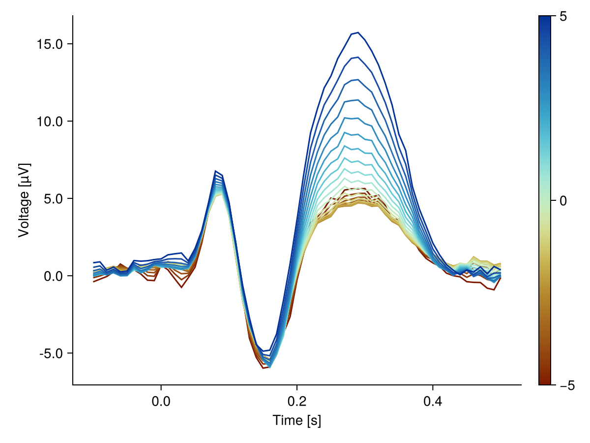

Non-linear splines
So far, the simulated data always contained a linear effect of the continuous predictor. Real effects are rarely linear. Here we generate data with a non-linear (quadratic) effect, fit it with a spline predictor and plot the marginal effects.
Setup
Click to expand
# Load required packages
using Unfold
using UnfoldSim
using BSplineKit # activates Unfold's `spl` extension
using DataFrames
using CairoMakie, UnfoldMakieGenerate data with a non-linear effect
By default, UnfoldSim.predef_eeg simulates a linear effect of the continuous predictor on the P3 component. We overwrite that component with a quadratic effect:
p3 = (
p300(; sfreq = 100),
@formula(0 ~ 1 + continuous + continuous^2),
[5, 1, 0.2],
Dict(),
0,
)
data, evts = UnfoldSim.predef_eeg(; noiselevel = 8, p3 = p3)
first(evts, 5)| Row | continuous | condition | latency |
|---|---|---|---|
| Float64 | String | Int64 | |
| 1 | 3.88889 | car | 62 |
| 2 | -3.88889 | face | 132 |
| 3 | -5.0 | face | 196 |
| 4 | -1.66667 | face | 249 |
| 5 | 3.88889 | face | 303 |
Note that continuous^2 is a proper formula term, so the simulated P3 amplitude now depends non-linearly on continuous, while the N1 condition effect stays linear.
Fit a spline model
Instead of modeling continuous linearly, we use a cubic spline with 4 degrees of freedom via spl(continuous, 4).
basisfunction = firbasis(τ = (-0.1, 0.5), sfreq = 100; interpolate = false)
f = @formula 0 ~ 1 + condition + spl(continuous, 4)
m = fit(UnfoldModel, [Any => (f, basisfunction)], evts, data)Unfold-Type: ::UnfoldLinearModelContinuousTime{Float64}
Any => Any: timeexpand(1 + condition + spl(continuous, 4)) for times [-0.1, -0.09
... 0.5]
✔ model is fit. size(coefs) (1, 305)
Useful functions: `design(uf)`, `designmatrix(uf)`, `coef(uf)`, `coeftable(uf)`Plot the marginal effects
The marginal effects show the modeled ERP evaluated at each continuous value - the non-linear relationship is recovered:
eff = effects(Dict(:continuous => -5:0.5:5), m)
plot_erp(
eff;
mapping = (; color = :continuous, group = :continuous => nonnumeric),
categorical_color = false,
categorical_group = false,
)
This page was generated using Literate.jl.